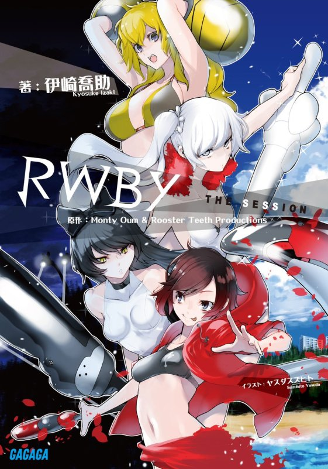
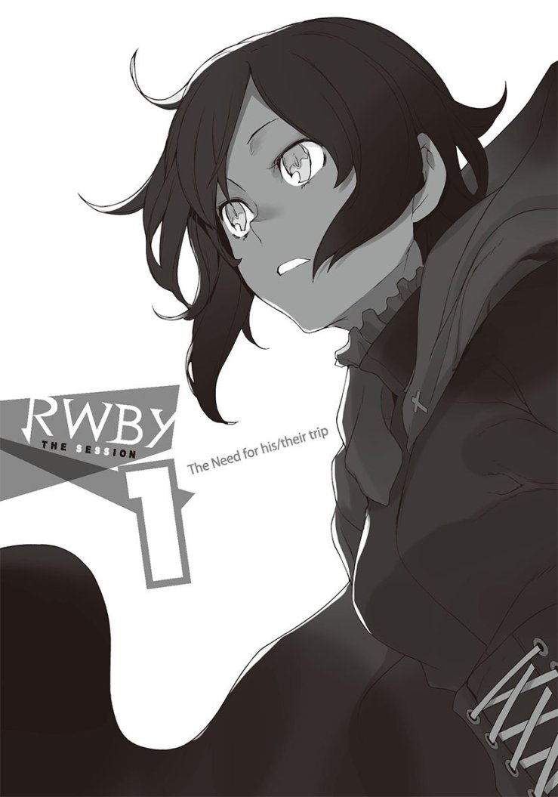
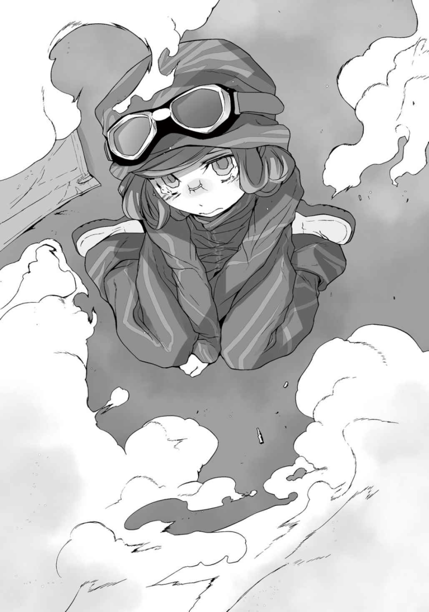
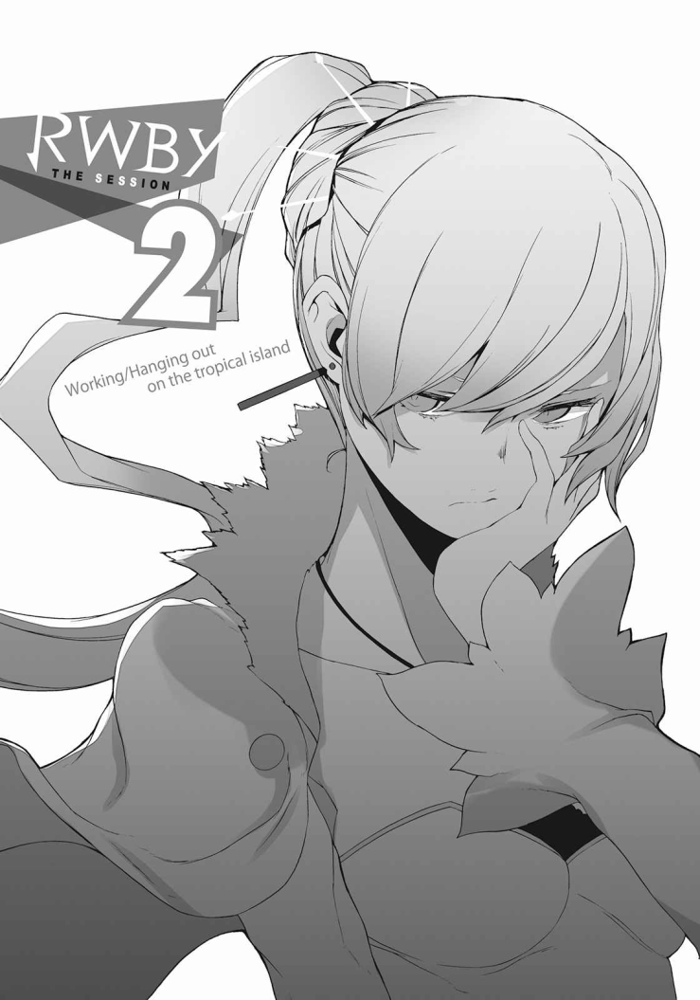
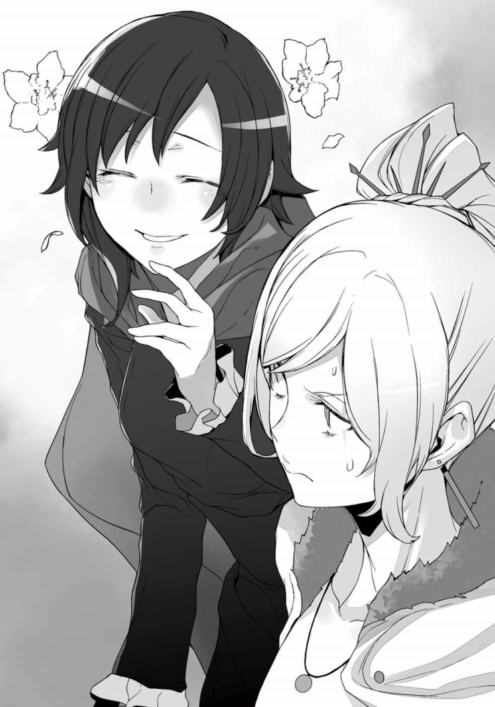

RWBY: The Session
Partially translated by Remnant Scans; on permanent hiatus

Table of Contents
PROLOGUE
Humanity born from the dust of the earth had also received the gift of knowledge. Knowledge gave humanity the wisdom to realize just how cruel and unforgivable this world called Remnant really was. The world that will not let you forget even for a second what terrible predators stalk its every corner.
Creatures of Grimm.
It’s possible that their sole reason for existence, these creatures full of mystery which we call grimm, is to attack humans, to pursue them, to devour them. They need no food to survive, they need no water, all they seem to need is to kill.
The method of their hunts is the simple act of complete slaughter without any kind of precision, therefore since the times of long past, they have continued to be the nightmare of humanity everywhere.
Facing the claws and fangs of these monsters, the flesh of humans stood no chance. However, humans were born with knowledge, and asked themselves the question constantly, “what do we need to be able to protect ourselves?”
Weapons.
Humans needed weapons to protect our frail bodies. Weapons that can fight these monsters, weapons that can kill these monsters. That power alone needed a resource of immense power, which by no means was easily found.
But if this went on …
Humans were born from the earth.
Yes, humans were born from … DUST.
Chapter 1

Part 1
“… Therefore, dust is the crystallization of nature’s energy. Fire, lightning, ice, nature’s elemental forces are contained within these crystals.”
The screen changes to an image of crystals of varying colours.
“Since long ago humanity has continued to use this natural resource, however, there is one problem.”
The screen changes again, now to an image of an exploding crystal.
“To control the raw energy of nature, one needed extreme finesse and technique. So our fore fathers though if the power cannot be easily mastered, why not refine it so that it CAN be easily used.”
Images were changed again, now to the benefits of Dust. Various shapes and sizes cut from the crystals. Ones used in cars, ones used in projects.
Ones used in weapons.
“The refinement of Dust to allow safe usage gave way to innovation, civilization and of course the burgeoning Dust industry. One could say our future…”
The screen changes once again, now to a scene of children laughing in front of a backdrop of skyscrapers.
“Hm.”
A hotdog suddenly is thrust before his eyes.
While lounging in front of the event venue’s giant monitor and watching its recordings a startled Jaune Arc quickly moves his body. Below his blonde hair, his blue eyes are opened wide and start searching for his companion.
The food stand’s owner, an elderly man with thin eyes and a balding head that has lost hair all around the top of his head, again thrusts a hotdog at Jaune.
Jaune, remembering that he ordered a hotdog looks back and sees the people lining up behind him, and noticed they all gave him the look that spoke: “Finish up already!”
Quickly pulling out his wallet and paying for his hotdog Jaune leaves the line. And a little bit from the food stand stood his friend.
As Jaune chews through his hotdog his friend, Lie Ren, asks him with cool and calm eyes.
“What’s the matter?”
“Nothing let’s go.”
Now together, they turn from the food stand’s line towards the assembly hall.
“Is this really Ok Jaune? Coming along with me for this?” Asked Ren as they walked.
“But it’s so rare that you would say “I have somewhere I want to go.” And what’s more, Nora couldn’t come either.”
“I did speak with Nora, she just didn’t wake up.”
Jaune then understood why that morning was so quiet. Ren’s childhood friend Nora Valkyrie, in contrast to the cool and collected Ren, was rambunctious and talkative when awake.
“But the fact that Nora couldn’t come could be a blessing.”
Ren raises his one of his eyebrows at Jaune’s satisfied expression.
“What do you mean?”
“Ren, what season is it?”
“Summer”
“Do we have classes?”
“No, it’s summer vacation.”
Jaune then gives a wide grin.
“Think about it Ren, we have tons of time thanks to summer vacation, and the two of us aren’t what you call the most handsome. By ourselves, we’ll never be able to entertain girls.”
His teeth shined briefly while he said that. Honestly, it was hard to tell if he was joking or not, at the very least Ren did not laugh.
“…..And?”
“To give girls a good time you must first plan out a date that’ll please them. Yes, what we need is a dating hotspot, that’s what we need!”
Preaching with such seriousness, casually using “we” when giving that statement. Ren just quietly responds,
“So basically you wanted to see if this event can be used for a date.”
“Basically. So, what does place have? I see a bunch of SIC logos everywhere, are they a famous brand or something? But the video earlier was more like a history lesson. Are the two related?”
“You’ll understand once you see it first hand.” Said Ren as the two of them passed the event entrance hall.
“Oh, Oh …. ?”
Taken up the entirety of Jaune’s field of view was the grand hall with its high ceiling and its wide atrium.
Within, a number of booths were lined up partitioned into sections, most of them displaying large machines with the staff explaining the product to visitors. And between the booths walked autonomous machines that mimic dogs and horses.
These “animals” with their motors and actuators working quietly led and guided and even gave rides to the attendees, diligent in their duties.
Faced with the sight before him, Jaune froze for a bit. And Ren with a serious face asked Jaune, “So will this place work as a dating spot?”
Part 2
In this cruel and harsh world of Remnant, safety is found few and far between.
Of the countless towns, cities, kingdoms that have risen and fallen in the annals of history four names still remain to this day.
Atlas.
Mistral.
Vacuo.
Vale.
In these four Kingdoms, there exists an institution, the “Academy” of said Kingdom. The purpose of these academies is to gather the brave and strong youths that stand against evil, to refine and train them to be guardians of the world.
To be Hunters and Huntresses.
In Vale’s Beacon, one of these renowned Academies, under the direction of Headmaster Ozpin the necessary skills and knowledge of being a hunter are taught to the students.
Jaune Arc and Lie Ren are team members of a team that attends Beacon Academy, and right now they are visiting an event in the city of Vale during their summer vacation.
“You wanted to come to a product exhibition of industrial machinery? You do know what a summer vacation is right?”
Surprised, the astonished Jaune finishes stuffing the rest of the hotdog into his mouth while looking around the exhibition hall.
The hall also had monitors showing similar SIC promotion video that Jaune saw on the big monitor outside when he was waiting for his hotdog.
“Welcome to SIC’s corporate exhibition. The philosophy of SIC is to watch over humanity, its vast potential, and to help it grow. For today our products will be on full display so feel free to look around to your heart’s content.”
Whether it be the machines, the dividers between exhibitions or even the mats laid on the floor it seems SIC’s star shaped logo was everywhere.
SIC, Starhead Industrial Company, appears to be a company that develops and manufactures machinery related to Dust mining and refinement and its uses. The exhibits on display at their booths include manufacturing machinery as well as weapons and ammunition. Also at the exhibits are unrefined crystals of dust that came from the mines owned by SIC.
With the aroma of machine oil drifting through the air, it wasn’t exactly the most romantic setting.
“If you bring a girl to a place like this, you’ll never get a second date.”
“….. Just to clarify, who did you want to ask to come here with?”
“Weiss Schnee obviously.”
Weiss Schnee, the beautiful white haired and porcelain skinned heiress of a grand corporation, and an honour student at Beacon Academy. She tends to be quite self-conscious of who and what she’s around.
“I have yet to see her accept any of your invitations so far.”
“I … I know.”
Being his teammate and his friend Ren knew quite well Jaune’s affection for Weiss, and also how it was a one-way street.
“But Ren, I’m trying to find something, anything. She does have a serious personality, so maybe if I could explain some neat product here she may actually enjoy this place.”
“So should I investigate a little?”
Ren pulls out a small white device, a scroll, and opens it up.
On this multi purpose device, that can do stuff from call people to function as an electronic identification, Ren taps away looking up information regarding the SIC exhibition. Finding some brochures regarding the event he starts opening them up one by one.
“How about this? A new ‘Lazy man’s pet’ exhibit. It hardly moves, will require minimal charging and doesn’t need maintenance.”
“Isn’t that just a stuffed doll? Anything else?”
“An experimental ‘Bionic Arm’ exhibit? ‘For those that need help in their every day lives.'”
“Two arms is enough for me.”
“The rest …. are video files.” Ren then presses a button starting one of these video files.
Jaune’s eyes grow wide as he watched the video starts playing.
Ren’s scroll was showing a very summer-esque scene, a beach in front of a deep blue sea.
Over the picturesque image of the calming tropical island were the words “Sapang Island.”
“Sapang Island, owned by SIC is home to many facilities for our research and development. Also, along with the research done here, a resort is also being built on this island since Sapang Island is such a perfect resort location. We periodically invite the general public here to help us improve our …”
“Did it just say that there are general public invitations?”
“Seems there’s a detailed explanation written here.”
Ren stops the video and looks through the explanation regarding Sapang Island.
“It seems that the leisure facilities built for the employees were recently opened up to the public. In exchange for SIC deciding the scheduling both the travel and lodging costs will be covered.”
“A free resort?”
“That’s what it says.”
With this information, Jaune starts trembling with excitement.
A tropical island, there couldn’t be a more appropriate place to spend your time during summer vacation. Under the crimson sun and clear blue sky. Standing on a white sandy beach in front of the sky blue sea. Beautiful girls in swimsuits. Palm trees in the background and eating tropical fruits and fresh fish, it’ll be the best!
“So how does one get invited to Sapang Island?”
“That, however, is not explained.”
“Haha, no way they would leave that out.”
Moving over Jaune reads the text on Ren’s scroll again. Furthermore, he rewatched the video file from the beginning and as Ren said, none of it explained how one gets invited to the island.
“….Really?”
“Maybe it’s only for shareholders or people that are in a business relationship with SIC.”
“Why would they do that?”
“To test the facilities and entertain important guests.”
With this hopeless news, Jaune’s expression drops like a rock.
Jaune is but a humble student, nothing like a company associate or a shareholder or even a machinery operator. The only person Jaune knows that might fit one of those criteria is Weiss Schnee. No matter how you spin it, asking the girl you’re trying to impress, “Hey can you take me to a resort using your family connections,” is just shameful beyond words.
“… Ah, darn it.” Giving up on the idea of going to an island Jaune starts walking.
“Let’s look around for something else, maybe a good idea will come up.”
“Sorry Jaune, but I got something I have to do first.”
Surprised at Ren’s words Jaune looks back at his friend.
“You aren’t here to preview the machinery?”
“No, I don’t have that kind of hobby.”
“Then to check out some new weapons?”
“No.”
“Then, Dust? Some kind of new effect they put into bullets?”
“No.”
“Then what?”
“Pancakes.”
“What?”
Taken aback by the completely random answer Jaune could only stare dumbfounded. Ren once again takes out his scroll and starts explaining.
“I came to see a specialized pancake making machine. It is a new ground breaking machine that will overturn all the previous specialized pancake makers. In this brochure it … here Jaune … hey … Jaune. Here … It’s written here Jaune.”
“……Ya sure.”
“Anyway, this is why I’m here.”
Ren then with a spring in his step turns around and lightly walks away into the crowd.
Left to his own devices Jaune could only stand there and dumbly stare at the back of his friend. Just then a dog drone passes by Jaune and begins talking to him.
“If you having trouble and getting lost, how about the latest mapping app for your scroll?”
“No … I’m fine.” Said Jaune, but then a thought came to him.
“You don’t happen to know how to get invited to Sapang Island do you?”
“Apologies, that is an unrecognized question.”
With a puff, the drone turns it’s sharp metallic head and walks away.
Turning away from the drone Jaune walks around in search of an interesting looking booth hoping something is cool here.
But unfortunately, Jaune has no interest at all in the industrial machinery everywhere, as such he could never find a reason to stop his feet from moving. Rather than ever going into a booth he just watches all the monitors hung from each booth.
Walking aimlessly and carelessly like that, it was only a matter of time before Jaune would walk into someone. Feeling a light bump on his back and returning from his daze, Jaune turns around and sees the person he bumped into tumble dramatically backward.
“……Ow”
Lying on her back was a girl younger than Jaune. For some reason, this girl was wearing an elaborately decorated overall, and on top of her chestnut coloured hair, she wore a pair of bluish goggles.
It appears that during her fall the contents of her bag were all knocked out and now documents littered this pathway. Jaune noticed that he had left footprints on a couple of them as well.
“Sor … Sorry! Are you ok?”
But the girl ignored him and dived for the laptop that fell from her bag. Sitting in front of all her documents she hacked away at the keyboard trying to confirm the state of her computer.
Jaune quietly starts picking up the documents and discreetly cleaned off his footprints.
That’s when he noticed something.
All the documents seemed to feature the SIC logo and in particular 1 sheet had an over saturated picture of a beach.
“Sapang Island….?” Said Jaune reading the words written on the paper.
All the info that made Jaune determined to go to the island earlier were written down on this piece of paper.
This sudden stroke of luck brought back memories of a Bingo session Jaune went to when he was a kid. Right from the start he instantly got first prize, it sure surprised everyone there.
Jaune extends his hands, then asks, “Are you a SIC associate?”
It appears the laptop wasn’t broken as she closed it and put it back into the bag she carried under her arms. However, she definitely wasn’t happy as she glared back at Jaune with a pout.
“Oh right, my name is Jaune Arc, a student at Beacon Academy. I actually have a quest …”
Rather than answering the girl just takes back the documents in Jaune’s other hand, and stuffs them back in her bag. Then just like the dog drone earlier, the girl turns around and just walks away.
“Wa, Wait! I have something I wanna ask you!”
The girls cuts in between two booths, into an especially busy passageway. The girl being smaller than Jaune could navigate through the crowd much better than Jaune, who now was having great difficulty keeping up.
“Excuse me, sorry coming through … OW! You’re stepping on me! You’re stepping on me!”
Bumping into people multiple times, getting kicked in the shins and having a dog drone walk on his toes Jaune finally gives up on the chase.
On the contrary, Jaune doesn’t even know where he was now. Looking at the booths around him it seems he was in the weapons area of the exhibition, all the people walking around were either big or gave off a powerful vibe just by looking at them.
Unbeknownst to Jaune who was remarking on a beast man with sharp tusks, walked four sweet and delicate girls that felt out of place here.
“LOOK, LOOK AT THAT WEAPON! AMAZING! I WONDER IF THEY’LL LET ME TEST FIRE IT!?”
“Look where you’re going! AND CAN YOU NOT PULL ON MY CLOTHES!?”
“I would rather go see bikes than weapons, see if they have new tires or seats available.”
“Nothing here interests me.”
Four familiar voices are heard. Jaune who was still in a daze from the goggles girl stopped and looked around.
“Oi, you’re in the way.”
Another beast man with ridiculous muscles and a notch between in his eyebrows nudges Jaune out of his way causing Jaune to lose his balance. Just as he was about to fall something grabs his hand and steadies him.
“……! Weiss?”
“You’re welcome.” A dog drone had grabbed Jaune’s cuffs, and while still in his grasp the drone continues. “By the way do you want the latest mapping app for your scroll?”
“….Uhh, I’m ok. Thanks for the help. …. You can let go now.”
While being held down by his sleeve Jaune searches his surroundings, but he, however, cannot find the four familiar figures anymore. Even so, he continues looking around until something finally catches his eye.
Unlike the booths, in what looked like the plaza, was displayed a giant industrial machine so tall you had to crank your head to see the top of it.
“What is that?”
An elephant looking machine; 4 legs, long tusks and a lengthy nose (Used to do actual work?). Jaune notices that the girl he bumped into earlier just so happened to be climbing said large machine. With her bag carried on her back, she uses a pickaxe looking instruments to climb, leaving behind scratches on the machine.
Yup, that was the girl who spilled those SIC documents, someone who was associated with SIC.
Jaune once again starts walking. While avoiding the attention of people and drones he crosses over the rope barricade and calls towards the girl who was climbing the large machine.
“Uh, you ok up there?”
The girl suddenly stops and lowers her head towards where Jaune stood. Her cautious eyes stare holes into Jaune as if condemning him for his immaturity at chasing her to here.
While feeling a bit guilty, Jaune nonetheless brings out his best smile to try to break the tension.
“Sorry to disturb you. Do you remember me? I introduced myself earlier.”
The girl’s mouth shifts slightly and she makes a sour face, then returns back to climbing the machine.
“…. Did you just click your tongue at me?”
The girl reaches the neck of the elephant looking machine and moves something. Suddenly the head opens up and the girl slips inside.
“EH?”
Just as Jaune realized that it was the cockpit, the mechanical elephant starts groaning to life.
Legs as thick as a pillar of buildings starts moving, each step causing a thunderous roar when it crashes into the floor. After gaining the attention of all the people in the vicinity the trunk knocks over a nearby crane.
Those who judged that this was a bit extreme for a demonstration starts fleeing. The staff members with SIC armbands have also run off, in their stead, it is the drones who are blaring their sirens and directing the crowd to safety.
However, Jaune was not running away from the scream filled hallway despite having the most warning of the disaster. He knew that it was the younger girl doing this and if that was the case Jaune thought he may be able to do something.
Jaune is a very optimistic individual.
“OII!! What are you doing! You’re … WHOA! That was close.”
In the face of the mechanical elephant that was scattering lined up chairs, breaking everything it steps on, Jaune decides to join those that were running away. As a Beacon Academy student, he did carry a weapon with him but this was too much for a simple sword and shield to handle. Bracing his body he pushes his legs against …
“…Huh?”
absolutely nothing. Looking down he sees that both his legs were dangling in mid air, in a blink of the eye the ground flys away from him. His hood having been caught in one of the tusks of the mechanical elephant, Jaune was now a rag doll being shaken up and down through the air.
All that was left to Jaune was to scream like a little girl.
“Someoneeeeeee!”
The back of the mechanical elephant’s head opens up and the head of the goggles girl pops out. Looking down at the hanging form of Jaune the two pair of eyes meet, this time Jaune clearly hear the girl click her tongue, “Chi.”
“Again with the tong…HYAAAAAAAA!”
The machine’s pace speeds up to a run. With every pounding step the tusks rock, shaking Jaune’s body along with it. Suddenly the rhythmic motion stops and Jaune’s hood is finally released from the grip of the machine’s tusk. Or in other words, Jaune was thrown straight into the air by the momentum of his earlier predicament.
“OHH NONONONONO, AHHHHH!”
Fortunately or unfortunately, Jaune was thrown right above the mechanical elephant. Jaune frantically struggles in midair to grab something however, he only ends up landing on the machine’s back. Clinging to the back as the machine starts running again Jaune screams for dear life.
Clinging to the back as the machine starts running again Jaune screams for dear life.
“PLEASE STOP!”
Jaune’s cries were never heard, all he could see were the violent shakings of the beast as it scatters everything in the nearby empty booths.
“Uggghhh….I’m gonna be sick….”
In the midst of tears and nausea Jaune notices a nimble black and red dot, a dot that in a flash closes the distance to him.
Reflexively closing his eyes Jaune hears in succession the sound of a hard impact, the sound of something getting ripped open. And the voice of a high pitched voice.
“Hi, Jaune.”
Opening his eyes Jaune sees a giant scythe embedded in the back of the mechanical elephant.
Sitting on the handle as relaxed as if sitting on a park bench was a girl.
Mustering his strength Jaune calls out her name.
“Ruby?”
The Silver eyed girl smiles back at him.
Part 3
Team RWBY of Beacon Academy did a questionable thing on their first day of summer vacation. At the behest of their leader Ruby Rose, they all headed to a machine maker exhibition held in the city of Vale.
At first, there was some opposition (mostly from her sister).
“It’s not dance club or a beach or any fun place that young people go to. Why do we have to go to such a drab place?”
Opposition along those lines.
But after some arguing back and forth the four team members reached a compromise. During this holiday the team members will rotate the “privilege” to choose their destination or activity for the day.
And thus the first day of their agreement was announced as “Ruby’s day.”
And Ruby used that privilege to the fullest at the exhibition, she looked at all the weapons on display, attacked the staff with multitudes of questions and generally did a bunch of unreasonable things. In spite of the outcry from her teammates, in spite of the countless times Weiss Schnee got angry at her she continued her “Ruby’s day.”
And on the day Ruby was off enjoying her holiday to the fullest, came a rampaging mechanical elephant.
Ruby was overjoyed.
Even though the machine was so large one could see it from far away, Ruby only saw it because it was moving somewhat close to where she was. But after seeing such a sight she could only think, “Lucky!”
The other three members were also delighted.
They weren’t like Ruby who had such appreciation for weapons, they were getting bored and were looking for something to alleviate that boredom.
“So when Blake said that Jaune was riding on the back of the elephant I said ‘No way.’ But after zooming in using our scrolls turns out you were on there. And since it would probably be a good thing that someone saved you I came along.” Rambled Ruby as she explained while riding on the back of a mechanical elephant.
“I … I get it, just please save me.”
“Sure, but the signal hasn’t …”
Ruby glanced down, and after Jaune followed suit he understood. The elephant had been rampaging in the same area for a while now and the reason … was because the rest of team RWBY were fighting it below, probably to stop it from heading to anywhere with people.
“….. RUBY! BEHIND YOU!”
Noticing the ‘trunk’ of the machine was approaching towards the casually sitting Ruby, Jaune calls out to her.
Ruby’s “baby” of a giant scythe is named ‘Crescent Rose’ which is actually a high caliber sniper scythe. (Cloud here, man I loved the fact the Japanese describe Crescent Rose as that lol.)
A scythe that can shoot targets from far away, a ridiculous thing that can mow down targets close to you while gunning down those that aren’t. And the 15-year-old girl in front of Jaune was using said ridiculous thing almost perfectly.
Ruby immediately dislodges her scythe and fires at the incoming appendage.
The dust infused bullet fired from the scythe rips through the approaching trunk shaped appendage.
Using the recoil from her shot Ruby flys backward. Switching the weapon to one hand Ruby then transforms the Scythe to its sniper mode then with her free hand grabs onto Jaune’s hood.
“I have a bad feeling about THIIIIIIIISSSSSSSS.”
The smiling and laughing Ruby pulls the trigger once again against the broken form of a metal trunk. Suddenly and violently Jaune’s body is blown backward.
Hunters who fight against the dangers of the world uses an ability called Aura from their body. A technique using the energy of life to form a protective shield around the body, and if that energy is honed even further a special power can be awakened.
‘Semblance’ is the special and unique power that each individual can manifest. For example, the Semblance of Ruby Rose is ‘Speed,’ the ability to, in the blink of an eye, reach velocities of immense speed.
In this instance, Ruby enhanced the recoil of her shot by using her Semblance, combining the two allowed Ruby to move faster than the eye can even follow. In an instant, the two were on the ground up from the back of the giant mechanical elephant.
Having taken two shots from Crescent Rose the mechanical trunk crumbles apart as Ruby roughly tosses Jaune onto the ground.
Speaking of which Jaune having only just recently learned about Aura has yet to awaken his Semblance.
And as he is unceremoniously thrown onto the ground he desperately fights against the nausea threatening to overtake him from his ride on the back of the machine.
“Ruby!” Came a high pitched voice from beside Jaune.
“I told you to come down with him AFTER I give the signal!”
If one looked up they would see a girl chastising Ruby. A girl with blue eyes and pure white hair worn in a ponytail, she wore a dress as white as her hair and in her hand held a cold yet shining rapier.
“MMMHHHFFF, MMMMHHFGG!”
Weiss Schnee. Jaune whole heartedly calls out the name of the girl. Unfortunately, his efforts never reached her as he had his hand over his mouth to prevent himself from vomiting in front of her.
The mechanical elephant stops rampaging about and with the remains of its mechanical trunk faces towards the two girls, almost as if it was trying to intimidate the two, almost as if it was confused at their intrusion.
Suddenly a serious of small explosions occur on the back of the machine and causes the giant elephant to start leaning towards the group and then start falling towards them.
“Oh no oh no OH NO!”
Ruby drags the screaming Jaune from the impact whereas Weiss dodges away with light steps, and immediately lets out a harsh call.
“Yang! When you’re bringing down a target are you ever aware of what’s around it!?”
Landing beside Weiss, a tall girl with fluffy blonde hair whirling around responds, “It shouldn’t be that difficult for a student of Beacon Academy to dodge something like this. So you and Ruby and ….”
The two then both look down at Jaune who was sprawled out laying face down on the ground.
“Oh, Jaune? It’s me Yang Xiaolong, how you hanging?”
“…….Can’t you tell by looking?”
“Of course, you’re perfectly fine.”
The ground trembles as the giant elephant start moving again.
“Weiss, Yang,” calls Ruby, to which both girls nods back.
“Hmpf, way ahead of you Ruby.”
“Got it sis.”
As soon as Yang finishes, she bursts forth flying towards a leg of the giant machine with a mad dash. Punching the joint of the leg, a small explosion is caused the second her gauntlet makes contact, blowing the leg clean off.
A weapon that causes an explosion each time one’s fist makes contact, that is the weapon of Yang Xiaolong, ‘Ember Celica.’ A pair of shotgun gauntlets with built in dust bullet compartments. A weapon made perfect for Yang’s excellent hand-to-hand abilities, turning her two hands into a literal bomb machine gun.
Under the assault of constant harsh explosions, the other legs of the giant elephant could stand no more and finally break apart. With its support gone the torso falls flat onto the ground, Yang seeing it fall turns towards Weiss and raises her hand.
“You’re up Weiss!”
Hearing her name Weiss flourishes her rapier. It is a weapon where the guard contains a revolver mechanism filled with different kinds of dust, capable of adapting to any situations.
Her favourite dust type befits the cold beauty that she is.
Weiss points her multi-action dust rapier, “Myrtenaster,” downwards and stabs the ground. As soon as the tip of her sword touches the floor, a shockwave of frozen energy is released.
The wave of ice flys straight towards the downed machine and completely encloses it, keeping it in place. Having completely immobilized her prey, Weiss raises her hand towards the frozen giant elephant. Suddenly intricate patterns light up on the floor underneath the block of ice.
This was the Semblance of Weiss Schnee, Glyphs, the ability to perform magic anywhere and in any place. (The kanji for Glyph was literally ‘magic force fields’ which amused me)
(TL: The kanji for Glyph was literally ‘magic force fields’ which amused me)
“Ruby,” said Weiss curtly, “finish it.”
Ruby lowers her stance and readies her scythe to her side, in front of her a long line of glyphs line up towards the giant elephant’s head. Seeing what was about to happen Jaune calls out to Ruby.
“Ruby! Don’t destroy the head! There’s someone …”
The sound of Ruby’s flight echoes through the halls.
In an instant Ruby turns into a red and black bullet, leaving behind a flurry of rose petals, charging through the line of glyphs to her target.
When Ruby reached the neck of the giant elephant, she was traveling at speeds more than fast enough to allow Crescent Rose to cut through the thick metal plating.
Like a guillotine the head of the giant is severed from its body, the trunk and tusks obliterated from the impact and the head itself blown to a far corner of the hall.
“Oh no.”
With unsteady feet, Jaune stands up and starts running.
The head of the elephant had flown far into the central hall, its remains knocking over what booths that were still left standing before coming to a stop. Jaune rushes to the brutally and cleanly severed cockpit compartment and calls out to anyone inside it.
Jaune rushes to the brutally and cleanly severed cockpit compartment and calls out to anyone inside it.
“HEY, YOU OK!? You aren’t dead are …”
“So there was someone inside.”
The sudden voice from behind Jaune causes him to jump from shock.
The originator of the voice silently slips past Jaune to look inside the wreck. The person had wavy black hair, wore a black ribbon and amber eyes that gave off the feeling of apprehension.
“Um … Blake?”
Blake Belladona is the last member of team RWBY, the most agile of the four, she supported Yang in the previous fight, easily outmaneuvering the giant elephant.
Blake was a very quiet person, Jaune has the impression that she always has a book on hand reading. Or rather Jaune hasn’t been able to have a proper conversation with her yet.
“Blake, you knew? you knew there was someone inside?”
“Well, there is a noise coming from inside.”
After Blade said that Jaune finally noticed that there was a thumping sound coming from inside the cockpit. One had to strain their ears to hear it but the sound was definitely coming from inside. Blake steps closer to the cockpit and takes out her black blade hitting the head.
The sound of something inside breaking could be heard causing steam to jet out. The cockpit opens up and a girl wearing overalls crawls out from inside.
“Gwah, Uwooo, Ghaaa! I thought I was going to die.”
The girl’s chestnut hair was in complete disarray and she had bruises all over her body. As the girl lifts her goggles from her eyes Blake grabs the girl’s wrist and in one swift motion pulls her completely out from the cockpit.
“Ah, thank you very mu….”
Gazing upon the sight of the glaring Blake the girl swallows the rest of her sentence.
“What were you trying to do?” Interrogates Blake.
“…..Um”
The girl’s face stiffens and her eyes freeze up. Blake expression told her that she will neither accept excuses nor deception despite the calm voice she used. Completely trapped and her wrist still being held by Blake, the girl naturally starts tearing up.
“I’m … I’m sorry, I just wanted to help Papa…”
“Papa?” Murmurs Jaune.
The girl turns her watery eyes towards Jaune begging him for help.
“Papa is an engineer at SIC but couldn’t come here today. I thought I could come and make the adjustments in his stead but instead, the thing went berserk. I tried to stop it but …”
The girl says as she starts crying, then full on bawling, her speech wracked with sobs.
Jaune starts feeling sorry for the little girl but Blake’s expression doesn’t change, she continues glaring at the girl who was covering her face with her hands.
“Did Adam tell you to say that?”
The girl stops wiping her tears and looks at Blake. A bewildered face that was clearly wondering “what is this girl with a black ribbon saying?”

“Who’s … Adam?”
Blake’s eyes continue boring into the cowering girl, strong and stern. Suddenly, however, she lets out a sigh.
“… No one, nevermind.”
Blake looked like she came to an understanding, to what, however, Jaune did not know.
“What did you mean by that?”
“A Trojan horse. But it seems it was just my imagination.”
Finally, Blake releases the girl’s hand then turns around and walks away through the fallen chairs and machine bits littered throughout the hall.
She headed towards the rest of her teammates who were surrounded by the SIC staff thanking them for their help. Jaune also wanted to be among that crowd giving thanks to Weiss and also maybe asking her out on a date.
Yes, that was his original reason for coming here. To scout out exciting places, come up with a fun schedule for a date and hopefully turn it around with Weiss. And yet he ended up riding a mechanical elephant and almost died when it tried to knock him off, how did it end up like …”
“Geez, who were those people.” Said the culprit with a sour face, the tears now nowhere to be seen.
“Even though it wasn’t made for battle, those four still took down a seriously heavy duty machine.”
“They’re Beacon Academy students.”
“Oh, so prospective hunters, no wonder.”
“I’m also a student at Beacon by the way.”
Puffing his chest while saying so, the girl looks back at him suspiciously
“You?”
Giving Jaune a quick look over the girl rudely laughs at him with a brief ‘Ha.’
“It’s not a joke! I’ve defeated Grimms!”
“Oh yes, how you were screaming at the top of your lungs and yelling for help were great contributions to the battle. ….. Oh, I’m not blaming you though, you helped out by not being in those four’s way.”
That said the girl looks upon the remains of the destroyed exhibition with a satisfied look.
Jaune couldn’t help but feel uneasy at the fact that she showed no remorse what so ever.
“What you said to Blake just now, about your father and …”
“I was lying.”
Jaune jaw dropped at how easy she admitted to that.
“Then … Then you … you’re … a terrorist!?”
“Terrorist? No, I’m not a terrorist. How rude.”
“Even though you took over a giant machine and made it rampage around this exhibition?”
“……. I have something I just can’t leave be ok.”
The girl awkwardly looks down at the broken monitor by her feet.
“IONA ROCKSHOW!”
Both Jaune and the girl jumped at the sudden loud voice.
The source of the noise was a man walking towards them with big strides, he had short cleanly cut hair and a face that seems it was beaten into shape with a hammer. From the uniform that he wore it was clear he was an employee of SIC.
“You know why I’ve come right? You ought to know!” Walking closer to the depressed disobedient girl, the man raises his voice more and more.
“What is the meaning of this? Explain! I need to understand!”
Jaune assumes this man was in charge of security for this event. His profound muscles stretched his poor uniform so much they threatened to rip.
Having an intimidating voice, with his clothes accenting his bulging muscles, Jaune knew right away that he would be a man that would be hard to deal with. Meanwhile, the girl already started the motion of wiping away tears.
“I’m … I’m sorry. I tried to bring it under control but I lost power to …”
Shamelessly saying such things while shaking from sobs the girl sneaks a look at Jaune from under her 2 hands.
‘Don’t say anything unnecessary’ were what her eyes said.
The large man raises his voice even further.
“You are responsible for the maintenance of the machines!”
“Uwuuu, I still don’t …. sniff.”
“It’s your job to figure things out and explain it to us!”
Having come even closer the girl stops pretending to cry and looks up at the man with an annoyed look.
“If you have a complaint with me then go ahead and contact the CEO and tell him.”
The man grabs the girl’s hair and pulls it back. Looking straight at her pained expression he continues on, annunciating each of his snarled words.
“I’m not as kind as the CEO, I’ll make sure you understand that if you ever forget.”
“OI, Stop! Leave it to the police!”
Jaune unable to watch any longer speaks up. Appearing as if noticing Jaune for the first time the large man rounds his eyes towards him, then looks down as if asking the girl to explain.
Never once did he let go of the girl’s hair.
“……. He’s just a normal visitor of the exhibition, I don’t know him.”
The boy who proclaims he’s from Beacon and the girl being held up by her hair glance at each other. The man looks at Jaune sizing him up. He then scoffs at Jaune clearly thinking that Jaune was no one special.
“The police? We didn’t call the police. Make sure you don’t say anything about what happened today, in fact, forget everything all together. Understand? If you say anything I don’t know what might happen. Got it?”
The man points his thick finger at Jaune using his entire body in an intimidating fashion.
Jaune finally realized why he felt a familiar vibe from the man, the atmosphere he gave off was almost the same as Cardin Winchester, a bully at Beacon Academy.
“If you didn’t call the police, what are you going to with her?”
“That’s none of your business, now excuse us.”
Pushing Jaune out of the way, Jaune couldn’t help but think how similar to Cardin the man really was and remembers all the time Cardin bullied him at school.
“….. I know.” Jaune mutters to himself.
Jaune then detaches the sword that he wears at his hip then points the scabbard at the man’s neck.
“What the?”
Jaune then presses a switch and the scabbard’s gimmick is activated, with the blade still inside, the scabbard transforms … into a brilliantly white shield.
Reeling from surprise the man closes his eyes and lets go of the girl’s hair.
In that gap, Jaune grabs onto the girl’s hand.
“Cmon lets go!”
Almost as if in a daze, Jaune runs away with the girl, and after running a bit Jaune looks back.
While the girl looked surprised she was still following Jaune, and thankfully the large man was not chasing.
He just stood there, unmoving, unflinching, staring at the two of them running away. It was the most ominous thing he could have done.
Pulling on the girl’s hand Jaune leads them to outside the event hall. They stop at the hotdog stand where Jaune was earlier today.
“….You’re safe now.”
As the girl vigorously gasps for breath hunched over her two knees, she looks back at Jaune.
“That wasn’t necessary … I didn’t need to run away…..”
“But wasn’t he going to like beat you?”
“In my position, he couldn’t do anything like that. Pulling my hair and threatening me, those were just an empty and childish show of violence.”
“Your position?”
“I think that should be obvious.”
After straitening out her hair and sorting out her breathing, she looks at the sword Jaune was reattaching back to his hip.
“That’s a weird weapon.”
“This, well … it’s a hand me down from my grandfather. The scabbard can transform into a shield.”
Jaune really hoped the girl wouldn’t compare his plain sword with the weapons of the four girls that fought earlier.
“That seems convenient when it comes to carrying it around.”
“Yes! That’s what I say!”
“So other than that does it do anything else?”
“…….No.”
“You can’t rely on either the weapon or its master.”
“Ok, I know I’m not the strongest guy around, you don’t have to rub it in.”
For sure the girl was making fun of Jaune, and yet she held a complicated expression on her face. Was it pity? Was it sympathy? Unable to keep seeing that expression Jaune says something to change the topic.
“That guy earlier called you Iona ….”
“Ya, my name is Iona Rockshow.”
“So Iona, who the hell are you?”
“I’m an official of SIC, you have just gotten yourself involved with an internal corporate quarrel. As long as there were no injuries the police won’t be contacted and everything will be swept under the rug.”
“You’re kidding me.”
“That muscle brain that was scolding me earlier didn’t chase us, right? He also couldn’t make a scene in front of someone on outside the company. As for what happened here, a small accident regarding the display equipment, the eye witnesses will be told to be quiet, and like that the incident will be over.”
Spoken as if it was a line prepared beforehand. Jaune could not understand the circumstances behind this incident, but whether or not Jaune could understand it didn’t matter, he would still not agree with it.
“An accident? That elephant tried to kill me and Ruby!”
“I was trying to save you. I was going to pick you up with the arm and put you down. But then the other three people attacked and I couldn’t do much after that.”
“You picked me up with a tusk!”
“Why would I try to do that? You just happened to get caught up on the tusk when the machine started up. If you had just ran away like everyone else you would have been fine, but you decided to follow me, what were you even trying to do?”
Saying that Jaune remembered why he worked so hard trying to contact this girl.
“I uhh followed you so that I could learn how to get invited to Sapang Island, but now ….”
“It’s not a pleasant place, please give up on that idea.”
Saying that Iona turns around and starts walking away.
For a moment Jaune thought about grabbing her, continue their conversation. But then decided against it, there was no point.
Jaune doesn’t think what she said was right, but there wasn’t much he could do if it was true. Furthermore ever since he started following her a lot has happened, it would be best not to get any more involved.
Jaune decides to first look for Ren who should still be in the assembly hall, and then quickly go back to the dormitories.
“…. Jaune Arc was it?”
Iona who was walking away suddenly stop and calls out Jaune’s name. Jaune so surprised at her call also stops.
For some reason, Iona was wearing her goggles which she had kept off up to now. It obscured her face making it hard to see the expression she was making.
“Can I ask you something?”
“Like what?”
“Why did you save me back there?”
That threw Jaune for a loop. It was an unexpected question and not one that had an easy answer.
While waiting for his answer, Iona takes out a coin and starts flipping it while still staring at Jaune. 10, 9, 8, … she counted, again, and again, and again.
“Um, can you please not do that, it feels like a countdown to something and it’s making me nervous”
“But I intended it to be a countdown.”
“……What happens when time runs out?”
“Hm? Who knows?”
This child, with just a coin, came up with such a creative torture method.
“It’s not like I need a reason to help someone! …. No that’s not it. I just … that guard reminded me of someone that also bullied people, I didn’t like it then so I did something this time. That’s why.”
Even though Jaune explained it to the best of his ability, Iona kept silently playing with her coin. Although she stopped counting there was still a pressure being exuded from her.
Suddenly Iona stops flipping the coin and holds it up, tails side facing Jaune.
“Do you recognize the design of this coin?”
“Well, there’s a white side and a red side.”
“You don’t know? They’re Queen Apple and Marshmallow Crown. It’s a cartoon that’s pretty popular among girls these days.”
“I typically don’t spend my free time following girl trends.”
On the red side was drawn a girl with a clear face and on the white side a clown with a round face. Iona once again flips the coin, catches it and flips it onto the back of her other hand.
“Which side is up? Depending on the result I’ll hand over tickets to Sapang Island.”
“REALLY!? O…ok got it, just let me think.”
Given such a chance by the younger girl, Jaune goes deep into thought.
Choosing the correct side would be very difficult and Jaune didn’t have any particular attachment to either character. If the queen had been on the white side he definitely would have chosen that.
Frustrated and hesitant, Jaune finally declares, “Red, the red queen!”
“Ooooooook!” Iona then opens her hand.
“White clown. It seems you lose.”
Jaune crumples to his knees.
Striking the floor Jaune blames himself for messing up a once in a lifetime opportunity. If he had grasped this chance he definitely would have been able to claim Weiss’ heart!
‘I’m such an idiot!’ Thought Jaune.
Looking down at the defeated Jaune, Iona removes her goggles revealing her face. Taking the overly decorated laptop from her bag, Iona starts typing on the keyboard.
“Just as promised, here are your tickets.”
“…Huh?”
Using an attachment to the laptop, several rectangular pieces of paper were printed out. Iona offered these to Jaune.
“I never said I would give it to you if you won. I said depending on the result.”
“You’re really giving those to me!? Thank …”
The ticket was quickly pulled away, Jaune’s hand was left grasping at air.
“Just some things first. You’re only to go there with close friends and only as a vacation. Also are any of your friends Faunus?”
“Faunus …? Well, I do know one ….”
Born with special traits of animals, Faunus had excellent physical abilities. Any discipline that required strong physical prowess usually had many Faunus in them.
“However I’m not on the same team. Although why does it matt…”
“Here you go.”
Abruptly given the tickets, Jaune quickly takes them before they could be pulled away again.
Jaune holds the tickets up to take a good look at them. Showing the SIC star symbol the ticket also contains a map to Vale’s port. It was a lot easier getting his hand on these than Jaune thought.
“Thank you! Thank you so much! This …?”
When Jaune tried to give his thanks, Iona’s figure was nowhere to be seen.
Part 4
The fundamentals of the academies that train hunters is to form their students into four man teams. They live together in the same dorm room, they go to school together, they live their daily lives together. All for the purpose of developing a connection with their fellow hunters and huntresses.
Ruby Rose
Weiss Schnee
Blake Belladonna
Yang Xiaolong
Using the first letter of their names is born their team name, RWBY. Like other students at the academy, they share a dorm room and even during their summer vacation they return here at the end of their day.
“…. Was it really ok for them not to notify the police or Beacon about that incident today?”
Her hands frozen in mid air, Blake murmurs her thoughts to no one in particular as she chooses a book from her book shelf.
Yang, in her usual cheerfulness, responds to her partner while choosing clothes from the closet.
“You still going on about that? The SIC big shots already told us that they want to keep it internal, so don’t worry about it. Not like anyone got injured anyway.”
“I … completely … agree!”
Weiss, who was pushing down hard on a luggage stuffed trunk, commented on the two’s conversation.
After throwing another spoon into the overstuffed trunk and succeeds in closing it, Weiss sits down on the nearby bed.
Having an incident like that happen at a promotional exhibition would be a huge scandal for a company, it’s only natural they would take measures to prevent the bad press from spreading.
“Exactly, if you say anything they’ll just silence you!”
While testing out swimsuits in front of the closet Yang casually says some dangerous things. Weiss however, was glaring at Yang, or more likely the slightly revealing swimsuits that Yang owned.
Despite her teammate’s reassurances, Blake’s expression doesn’t soften.
“……Don’t you think it was hasty to assume that it wasn’t related to me at all?”
“Ok, hold up Blake. Don’t go start thinking like that.”
Yang immediately stops what she was doing after hearing Blake talk like that.
In an incident right before summer vacation, her teammates learned that Blake was a Faunus, and once was part of an extremist group that targeted large corporations.
The organization that fought for Faunus rights appears to have changed since Blake left it. With the incident fresh in her memory, it was clear that was what was causing Blake to worry.
Therefore Blake can’t help but think one thought regarding today’s accident.
‘It was done by the organization I was once part of.”
“You’re overthinking it. The perpetrator wasn’t a Faunus, right? I don’t think it’s those guys this time.” Reassured Weiss.
“It isn’t hard for a Faunus to imitate a human and pretend to be one.”
“Well, we can’t exactly refute that statement,” Yang says to Weiss, Blake continues ignoring Yang’s light hearted comment.
“The SIC is a perfect candidate to attack for the organization, sure I didn’t hear about targeting them before but they might have decided to do so recently. There could be a ton of reasons why they were attacked today.”
As no one could argue against Blake on this, the room grows solemn.
Yang understands and shares Blake’s concern and Weiss, having already had a harsh argument with Blake on this topic before, wanted to exercise discretion when dealing with it again, lest she repeats her past mistake.
During all of this, the leader of team RWBY who was missing …
“I’M BACK!”
Returns at the most inopportune moment. Carrying a water donut and a beach ball under her arms while wearing a snorkel on her head, Ruby’s merry appearance was terribly out of place.
“Ladies of team RWBY! Your invulnerable leader Ruby Rose has returned after splendidly finishing her difficult task! Acquiring bounty that is absolutely necessary for going to … the … sea.”
Finally noticing the cold atmosphere in the room, Ruby puts down the beach ball.
“….. Did something happen?”
“It’s nothing, just some discussion about a conspiracy theory.”
While saying so Yang turns to look at what was behind Ruby.
“So, what’s that thing behind you?”
“I can hear you!”
Ruby, who had instantly regained her spirit, jumps aside to introduce the person behind her.
“It’s the good friend of team RWBY, Jaune Arc!”
“Uh, hi.” Said Jaune while raising his hand out of habit.
“We can see that.” Responds all three members of team RWBY.
Feeling the pressure of the less than welcome atmosphere Jaune retreats back right into Ruby.
“Tough crowd huh Jaune.”
“Y, ya. Thanks for the help though.”
“Anyways, don’t you have something to ask Weiss?”
“Me?” Weiss says tilting her head.
Jaune clears his throat, wipes his hands on his pants, and grabs the ticket in his pocket.
“Weiss, so about this summer vacation, I was wondering if you uh …”
It was then that Jaune notices the trunk beside Weiss. Not just Weiss, all the girls seemed to be preparing for a trip, packing clothes and items into luggage bags, Ruby even looks ready to head to the beach right then and there.
“Summer vacation? Of course, I already have plans.” Weiss answers with her hands across her chest.
“Hehehe. Look, At, This!”
Held proudly by Ruby were four very familiar looking rectangular pieces of paper, all marked with the SIC logo and a map to the port in Vale.
“As a reward for stopping that machine’s rampage we got tickets to a resort.”
“Basically a bribe.” Said Yang.
“Well, maybe …” Trailed Weiss in her sentence.
“So what’s the name of the island we’re traveling to?” Asked a curious Blake.
“Um …” Ruby responds as she looks closely at the tickets.
“…..Sapang Island.”
Before Ruby could finish, Jaune answers for her.
Part 5
Team JNPR is another team of first years at Beacon Academy led by Jaune Arc. It’s members are
Jaune Arc
Nora Valkyrie
Pyrrha Nikos
Lie Ren
Ever since the start school, they have had a connection with the members of team RWBY. Even within the dormitory, the two team’s rooms are right across from each other.
Currently in said room is everyone except their esteemed leader.
“So why hasn’t Jaune returned yet?” Pyhrra asked Lie Ren who had just come back from his trip to the SIC exhibition.
“I had tried contacting him through the scroll but I can’t get through ….. is it true there was an accident there?”
“That’s what I heard too. I had something else to do so I was separated from Jaune, but the entire event was canceled and I was evacuated.”
Pyrrha’s bright green eyes clouded with worry from those words.
Pyrrha Nikos, a tall beauty with clear green eyes and red crimson hair, she was already well known as an accomplished student even before coming here to Beacon.
For some reason, she was not chosen to be the team leader, that went to the scruffy blonde Jaune Arc. However, Pyrrha never voiced one complaint and dedicated herself to the support of her leader.
“…..It’s probably fine but just to be sure we should go look for him. Ren, can you show me where the exhibition was?”
Ren knew this would happen from the moment Pyrrha asked him where Jaune was.
“REN WELCOME BACK!”
Suddenly the bathroom door was thrown open and out charged a girl, and with great force rushed to Ren and hugged him. Or more accurately she turned her whole body into a battering ram that ran straight into him.
“Where did you and Jaune go? So Pyrrha you were saying? Oh ya, now I remember, you said a pancake competition! Were the pancakes tasty? Pancake!? Why didn’t you invite me? You know I would want to go! Meanie!”
The girl currently clinging to Ren’s arm while voicing her complaints is Nora Valkyrie, the N of team JNPR. Currently, in her pajamas, this girl always goes through life at her own pace.
“I did try inviting you, you just wouldn’t wake up.”
“Really? Is that what happened? Oh oh, where’s Jaune?”
Ren, again, recounted his experiences that day to Nora, how he and Jaune went their separate ways, that an accident happened and how currently Jaune can’t be contacted.
“Is that it, then you shouldn’t go look for Jaune!”
“Uhhh, but …”
In a whirlwind of motion, Nora instantly plunges into their closet.
“We need someone here …”
Now holding clothes and her weapon she returns back into the bathroom.
“In case Jaune …”
Coming out from the bathroom Nora had changed to her familiar combat attire. Now she sports a black vest with a pink skirt, and in in the middle of her blouse was her characteristic heard shaped cut out. In addition slung over her shoulder was her favourite weapon
“Comes back first!”
Not stopping for a moment, Nora rushes out of the room with the force of a typhoon, slamming the door after her. Ren pinches the bridge of his nose, having been with Nora for so long he knows that in moments like this, the only thing you can do is just play along with her.
Pyrrha meanwhile can only smile wryly.
“I guess it can’t be helped, I’ll stay here and wait for Jaune. Ren, you go with Nora.”
“Got it. Call us if he comes back.”
Just as Ren puts his hand on the doorknob he gets startled as the door opens by itself.
Smiling sweetly through the door was Nora who had just moments ago rushed out.
“I found Jaune!”
As if presenting a cat she had just found, Nora holds out the hand of Jaune Arc.
“Jaune! What happened? We heard there was an accident and …”
Jaune suddenly grabs the shoulders of Pyrrha who had rushed over.
“Jaune?”
“Pyrrha, we’re going to a tropical island!”
“Huh?” Resonated his three teammates. Undeterred Jaune shows them the crumpled tickets in his hand.
“Look! I have enough for four people so the entire team can go. It’s an all inclusive stay at a tropical island resort right by the beach!”
The three members start reading the words written on the tickets.
“So you were late getting these?” Asked Pyrrha suspiciously.
After thinking for a bit Jaune replied, “Ya.”
“…. I see. That’s great Jaune, Thank you.”
Hearing Pyrrha’s polite thanks, Jaune scratches his head with a bashful expression. Ren, however, calmly starts reading the schedule and map written on the tickets.
“This ticket is only valid for a ship leaving tomorrow morning. That doesn’t leave us with a lot of time to prepare.”
Ren looks back to his childhood friend and says “Nora also …”
The words get stuck in his throat. Nora was no longer wearing her battle attire nor did she have her weapon either. She was now wearing a short sleeved t-shirt over top a swimsuit, a snorkel on her head, a beach ball and water donut in each hand, and flippers on her feet.
Having frozen Ren in place by her instant change of wardrobe Nora lets out an exuberant shout.
“YAY A VACATION!”
Part 6
Dust, Aura, Semblance.
These things allowed man to protect themselves from the darknesses that surrounded them.
And in their struggle against the shadows, there has always been an existence that held ‘power’ to ward off the disasters of the world.
Hunters.
Every hunter is a skilled warrior utilizing both their weapon and their Aura.
With the combination of semblance and their special weapons, a hunter has the power comparable to a small army. That power is usually used for the protection of people from the creatures of Grimm.
In the harsh world of Remnant, Hunters are the shields that protect humanity.
The prospective hunters that sign up at Academies, they are the hope for future generations.
However … power and skill, they do not always reside in those souls that are righteous.
Part 7
“So in other words, the partnership that we have so diligently been working on will now have to be remade.”
Roman Torchwick, a young man that wore a white coat and a black hat, said this as he points his cigar with an air of superiority. His features could be described as chiseled or handsome yet his expression always exuded his underlying pride and conceit.
When asked to describe him in one word, ‘Shady’ would be the most natural thing to respond with. But given his history as a well-known criminal within the underground, it was to be expected.
“Hey! Hey!” Yells a man in the crowd facing Roman. He was a man looking in his forties, his shining combed hair and equally glossy mustache were most likely styled with many chemicals. Just looking at this man, Roman already felt his stress building.
“It almost sounds like you are trying to voice a complaint, Roman.”
Sizing up the man Roman wanted to comment about the style and appearance of the uniform he wore. However, all his subordinates behind him wore the same thing so he decided it must be some kind of local trend. Truly a backwater place within the world.
While true Roman always kept an eye on to the aesthetics of his business partners, he would never let something like bad hair be the deal breaker in any business negotiation.
“What you showed us, what we requested. They were never delivered. That’s why we are starting over.”
“However Roman Torchwick … the failure of that agreement, that was on you. Despite saying you were one of us and shared our cause, you never once told us what you were planning.”
“Please don’t bring personal beliefs and morals to a business agreement. I do not disagree with your way of thinking, you do not disagree with mine. Isn’t that what running a business is all about?”
“Our leadership has shown great disappointment in your treachery, and personally, I think you’re nothing but a hoodlum. Oh, excuse me, I should show more gratitude to the fact that bringing someone of your particular history has not sullied our noble ideology yet.”
With a sigh, Roman looks up at the dark night sky, from the grounds of the warehouse district he could clearly see the countless fragments of the broken moon above Remnant. If it was ok up there, why can’t I throw this ingrate to the winds as well?
“Okay, fine.” Roman drops his cigar onto the floor and snuffs it out with the tip of his cane. Taking a quick look at the clock he notes that time is up.
“If negotiations have failed then so be it. It was a pleasure doing business with you, now if you will excuse me I have a ride to catch.”
“Wait.”
Sounds of footsteps and unsheathed weapons fill the air as the men form up around Roman, all pointing their rifles at his head.
“I’m afraid you will have to come with us … you know too much.”
“Afraid I’ll talk?”
“Excuse me if I don’t trust you.”
“…. Hmph.”
Roman just shrugs his shoulders like this was a minor inconvenience. He then detaches the handle from the briefcase he was carrying, dropping it to the floor. Roman then proceeds to kicks the briefcase to the feet of the opposing man.
Bewildered the man looks down at the case raising an eyebrow.
“And this is?”
“The solution to every problem. You take that and you’ll let me go.”
“Money?” Said the man with deep distain written on his face.
“Grab it.” He instructs his men. “However we won’t be honouring your demands. …. Take him.”
Following orders, the men start closing in on Roman.
If they had known Roman Torchwick better, they would not have tried such an action. Even in this dire situation where he was surrounded, Roman had no doubt written on his face and even wore a smug expression.
As the grunts picked up the briefcase the lid opened by itself. Inside was not rows upon rows of bills as one thought, but instead one single red shining crystal. A dust crystal …an unrefined raw dust crystal.
Pointed towards the dust in the case, the tip of Roman’s cane emits a pop sound as it opens.
“It’s not money that solves problems, it’s firepower.”
From the cane shoots out a red projectile that crashes into the dust held in the briefcase. The reaction was instant, red light starts to pour out from the little crystal.
And just like that the dust explodes blowing the surrounding men away.
Throwing away the handle of the briefcase, he starts whistling.
“Goodnight dear fools! It’s regrettable but our meeting has to come to a close as my ride has just arrived.”
From the dark sky, illuminated only by the crumbling moon, descends a single aircraft. From the opened cargo hold a rope is thrown out and falls to the ground. Roman grabs the rope and hangs his cane off a fixture on the rope.
“Don’t let him escape! Catch him!” Groaned the crawling mustached man who had luckily avoided the brunt of the explosions. However, there were barely any men left standing after the explosion.
In contrast to the groaning group in front of him, the lively Roman bids farewell with a wave of his hat as his body is lifted to the aircraft.
Within the cargo hold manning the winch were a group wearing white masks. These men that had ears and horns like beasts, all looked like humans mixed with animals. They all wore the same white jacket with a sigil of a red wolf on their backs, the symbol of the White Fang, an extremist group of Faunus.
“Glad you’re safe boss.”
“We won’t see those guys again, we’re through with them.”
“I knew from the beginning that working with them was going to end badly.”
The men said as they helped Roman into the safety of the cargo hold.
As the aircraft slowly ascends over the warehouse, Roman looks down as his ex-business partner shrink smaller and smaller. He can’t help but give them a sneer as he flies away.
“……………..?”
Within the darkness of the deserted warehouse district, Roman noticed a figure appear out of the shadows. It was just one person but it was someone Roman recognized.
“You …”
Roman Torchwick was a man who had been in fights many times before. He has fired his weapon countless times and faced just as many dangers.
He survived all of those encounters by listening to his instincts.
“FLY UP NOW!”
The lone figure prepares a long looking item. Realizing that they wouldn’t make it, Roman braces for the impact to come.
With a thunderous roar, a pillar of light shoots out from the ground, clipping the wing of the aircraft and burning it.
Despite not taking a direct hit, the aircraft shakes violently. Was it fire that hit them? Lightning? Both? If it was him, it could have been any of those things.
The aircraft, having been damaged by the attack, starts to list and drops in altitude smoke billowing from the damaged wing. Within it could be heard the shouts and screams of all the Faunus inside.
“……………….”
Roman leans against the wall of the listing plane and lights a new cigar with his favourite lighter.
“This is going on your tab, Faultry.” Murmurs Roman looking to his side at the lone shadowy figure on the ground.
Chapter 2

Part 1
Beacon Academy – Dormitory, early morning.
“It seems our team is still lacking in the teamwork department.” Said Weiss to Ruby as they got ready in the bathroom for their vacation trip. “I kept reflecting on the battle yesterday and there isn’t any other way you can look at it, we have a serious problem with coordination. I want to believe you understand that this is your problem as team leader Ruby, but sometimes I wonder. Be that as it may, I haven’t forgotten when we took down that Nevermore during our entrance exam. I think we should do some training so that we can draw out that kind of team syncing more easily. As it happens Sapang Island has training facilities so I propose that in our spare time we have training camp activities at those facilities. Of course Ruby you get the final say in this. Also Ruby … You’re using my toothpaste.”
Weiss was wondering why Ruby had not said a word during this. As it turned out Ruby’s mouth was full of bubbles from brushing her teeth.
Vale Harbour – Late morning.
“This will be the first time us four will be traveling together.”
As the ship set sail, leaning against the handrails on the deck of the ship and gazing out to the sea. Yang speaks with her sister Ruby.
“Ruby, as it’s our first trip together we need to make sure to make some great memories! As such, I made sure to check up on some pamphlets before we left, look at this picture! The beach looks so beautiful! And the ocean is so blue it’s almost scary! We have to go here first. We are going here, right? I worked hard picking this swimsuit, also there are so many activities written here. There’s … snorkeling, diving, glass floor boat ride and a super jet ski banana boat …. super jet ski banana boat? What kind of weird activity is that? Anyway, at the hotel, everything is pretty much automated. Does that mean room service will have a machine deliver it to us? Well, I guess that doesn’t matter.”
“It wasn’t that Ruby wasn’t listening to her sister Yang, but from the top deck of the ship, Ruby’s attention was stolen by the view she had of the ocean.”
“Look Sis, over there! A dolphin!”
“Really? Where? OMG, it’s so cute.”
Part 2
“…..Huh?”
After making a racket on the decks with her sister, Ruby returned back into the ship and while washing her hands in the washroom, she came to the realization of a problem.
When thinking of what to do once they arrive, she remembered Yang’s talk of the variety of activities at the Beach. But Weiss also had plans for their team from this morning.
When thinking about this logically it comes down to this.
1. Weiss wants everyone to train.
2. Yang wants everyone to enjoy and play around.
3. And the two probably won’t be receptive to each other’s ideas.
Ya, they’ll definitely argue with each other.
In fact, Ruby just realized she hasn’t really talked about what their activities were once they arrived. Yesterday, she got caught up in the excitement of receiving these tickets from the man who said he was in charge of the SIC exhibition event, and just came along without thinking much about it.
What to do. If I make this trip into a training camp will Yang go along with it? On the other hand, if I shut down the idea of training will Weiss agree with that? Both decisions are troublesome, Yang doesn’t compromise when it comes to enjoying herself, and Weiss is a rigid and studious ice queen.
Groaning as she walked along the corridors, Ruby eventually ended up back at the lounge.
The lounge held many people that wanted to avoid the strong winds and blazing sun of the decks. Originally thinking they were the only people invited to Sapang Island, it turns out the ship was full of guests also heading there.
Standing there Ruby saw the figure of Blake sitting at a table by the window, her black hair fluttering in the wind looking out at the ocean with a quiet expression.
“Blake”
Hearing Ruby beside her, Blake turned her silent gaze to her leader.
There were no signs of joy in those beautiful amber eyes, no signs of excitement at their upcoming resort trip. Ruby, wanting to draw out a little bit of happiness from her teammate, starts cheerfully talking to Blake.
“Wouldn’t it be better to look at the ocean on deck? Yang’s practically stuck to the handrails outside.”
“It’s ok.”
It was short and blunt, but not all unexpected from Blake. It was perhaps not the ocean Blake was looking out at, but what was inside herself.
Unable to hold it off any longer, Ruby finally asked the question that she has been thinking about ever since the start of their vacation.
“I’m sorry if I’m wrong, but … you’re worried about the White Fang aren’t you?”
Blake didn’t immediately respond.
Blake Belladonna, she had just recently revealed to her teammates her secret and her past. She is a Faunus, an outsider, she hides her cat ears behind the bow on her head. Not only that, she had been part of an extremist group known as the “White Fang.” A radical group that took up arms in their fight to achieve Faunus rights.
The incident that the White Fang was behind, the incident that revealed Blake’s secret to her teammates, Ruby had thought that the problem had been resolved.
After a long silence finally, Blake calmly said these words.
“Everything’s ok, team leader.”
“Really?”
“Yes, I’m fine.”
“Then you should start enjoying yourself!”
Ruby had come to a decision regarding their activities when they arrive at the island. Like Yang said this trip was about having fun, to make their comrades forget their troubles.
“Yang told me that the beach is beautiful! There’s also going to be diving and a banana boat, a really cool banana boat and ….. uh, what else did she say.”
“I hate getting wet.”
Blake strikes back with words that ring coldly through the air. Yet afterward Blake held an expression that seemed surprised she had said such things. Ruby, however, looked like she wanted to run away in tears.
Breaking her gaze away, Blake takes up the same posture as before staring out into the ocean.
“… Weiss was looking for you, something about what we plan on doing on the island.”
“Ok …. got it.”
Ruby not knowing what else to say decides to leave the lounge and Blake behind.
Just as she was about to leave, she takes one hopeful glance back, but Blake stayed there, continuing to look out at the expansive ocean.
Part 3
The ferry to Sapang Island was a far larger ship than Weiss had initially imagined it being. The ship was full of guests and the corridors were filled with both humans and Faunus.
Weiss took this opportunity to not only look for Ruby but also take a tour of this large ship. Since SIC seemed like it had a different philosophy towards business, Weiss, being the heiress of the Schnee Dust Company, was quite curious.
When one talks about technology and industrial advances, especially in the areas of drones, one name comes to mind, Atlas. Of the four kingdoms, Atlas truly stands above the rest in this regard, at least this is what Weiss wholeheartedly believes in regarding her homeland.
However the many kinds animal-type drones at the exhibition yesterday had caught Weiss’s attention. While drones that simulated animal behaviour exists in Atlas, Atlas did not have nearly as much variety as what she saw yesterday.
‘While they are still quite ways from overtaking Atlas in technology, this company in Vale actually might stand a chance to do so. I really should report this to Winter.’ Thought Weiss.
While Weiss was evaluating SIC in a not very student like fashion, someone taps her shoulder from behind.
Turning around Weiss couldn’t help but raise her voice a little.
“Pyrrha!? You’re here?” Standing before her was the red-haired Amazon with her hair in her famous ponytail. Surprised yet also excited, Weiss grasps the hand of the redhead in front of her.
“Are you going to Sapang Island too?”
“Yes, team JNPR are all going.”
“Wow! What a coincidence that we’re both going!”
Pyrrha could only put up a strained smile at the excited Weiss who never stopped squeezing her hands.
“Ah, Weiss … does that mean you were at the SIC exhibition yesterday?”
“Yes, our entire team was … Oh, that reminds me Jaune was there as well. Does that mean you guys got the same kind of invitation we did? That’s it isn’t it!”
Having deducted how this ‘coincidence’ happened Weiss gives a nod to herself but then notices that Pyrrha had put on a sad smile, one that she seems to have much practice doing.
“Pyrrha? Is something wrong?”
“No, it’s nothing ….”
It was then while Weiss was trying to understand Pyrrha’s look that a loud boisterous “Ahhhhhhh” came from behind her. Of all the people that Weiss knew, there could only be one person that could make such an insane sound.
“Pyrrha!? Why are you here? Is Jaune here also? How about Ren and Nora?” Shouted Ruby as she came running down the hallway.
“They’re also here.”
“Wow! What are the chances!?”
“…. I have to go, Jaune kinda got sick once he the ship started moving.”
Pyrrha turned to leave and Ruby looked like she was about to follow but Weiss then grabs her arm to stop her.
“Perfect, I was just looking for you. I wanted to talk to you about some plans I came up for the training that we’ll be doing.”
From out of nowhere Weiss pulls out a stack of papers and gives it to Ruby.
“Here is a list of problems that our team have in terms of coordination. Over here is a training schedule that I came up with, also here is are some formations that I thought might be nice to try out. Also here …”
“Ok, ok, Weiss stop! How much did you make!?”
Hearing the loud complaint from Ruby, Weiss brings her face close to her leader’s.
“Have you forgotten? The Vytal Festival is happening at the end of the year, the world’s largest, toughest, and most important tournament, it’s obvious that we need to prepare for it. As team leader, you should start thinking of some ideas to improve our teamwork before the summer vacation’s end. Got it?”
Ruby steps back from the menacing aura that Weiss extruded, she never thought her teammate would be so serious when it came to summer homework. Frantically Ruby tries to change the subject.
“First … First of all, we should go ask what Blake and Yang think about this training …”
“I’ve already talked to Blake,” responded Weiss triumphantly. “She happily agreed to my plan, I’m sure Yang will understand as well.”
Faced with the complete confidence that Weiss had, Ruby couldn’t say anything back.
‘…. Who knows, maybe if Weiss and Yang talk to each other, it’ll make it easier to change one of their opinions.’ Thought Ruby optimistically as she and Weiss returned back to the ship deck where Yang was.
Part 4
The waves that emanate from the ferry becomes less powerful as it starts slowing down.
Seabirds flock around and sing their distinctive cries, just beyond the horizon a shadow in the shape of an island starts to form. Sapang Island, the tropical resort island beckons the ship to its wide beautiful beaches.
Beyond the sandy beaches lay roads flanked by exotic tropical plants, the buildings all pristine and newly made.
The passengers on the decks are treated to a gentle breeze of salty air as they look and point upon their destination with smiles and excitement. Ruby was of course among those passengers as she cheered at the sight of the approaching island.
“Look, look Blake! There it is! I can see the island!”
“Yes, I see it,” Blake answered calmly while also holding onto Ruby’s clothes to stop her from falling into the ocean.
“The beaches are so white, they look beautiful! Hey Weiss, Yang you two …”
Ruby stopped herself when she turned to her other two teammates.
“Like, I, said, why would we do training when we’re at a tropical resort!?”
Against the booming voice of Yang, Weiss responds with equal determination.
“And I already said that we have problems in our team coordination.”
“What are you talking about, yesterday we did fine!”
“When a team starts understanding each other and avoids useless actions, it opens up the way to more advanced tactics and maneuvers, that’s why I said we need practice!”
“That’s exactly why! I know that our team needs to understand each other more! That’s why we need to enjoy ourselves to the fullest, TOGETHER!”
“You just want to play around don’t you!?”
“Of course!”
“Can you ever be serious!?”
Seeing her teammates argue with each other, the smile on Ruby’s face stiffens and can only now be described as forced.
“Look, Blake, it’s the island.” Said Ruby again as she turns her gaze back at the approaching island.
“Yes, I see it.”
With the ferry docked at the pier, the passengers descend down to the dock one by one. The four members of team RWBY gasp at the scenery before them. Tall, short, large, small, wide, thin, contrary to their expectations the harbour was full of drones of all shapes and sizes.
Elsewhere in the harbour, a large drone was unloading cargo from other ships that were also currently moored here. The drone was similar to the elephant drone that went rampant at the exhibition, except instead of an elephant it was in the shape of a water buffalo. Dutifully, it lowered the small containers from the ships one by one.
On the water, stood people wearing the SIC uniform overseeing the entire operation using the tablets they held in their hands. Looking at their feet, it seemed a jellyfish looking machine was fulfilling the role of being their foothold.
“Everything looks like an animal huh.” Said, Blake, as she avoids an armadillo looking drone rolling past her feet. Certainly, every autonomous drone here was modeled after the form of an animal.
“In the field of biometrics, copying living creatures is a common approach when it comes to the engineering the mechanics of something. In this case, however, the animal shape is more about design rather than function. Most likely to give a sense of familiarity to the end user. In fact Atlas …”
“She sounds like you when you start talking about weapons Rubes.” Whispered Yang to her sister as they looked on as Weiss continuing her speech.
“No way! I explain things way more clearly than that!”
“Hey.” Called out Blake to her teammates as she points to a machine before them.
“I think this guy wants us for something.”
The thing in front of them had lights that blinked and flickered, it had a body that was round like a bike wheel, and finally, it had a head that ended with a pointed beak. It was a drone obviously modeled after a bird.
“Miss Ruby Rose and friends, welcome to our island. Your trip must have been tiring, we have prepared a shuttle bus to the hotel. Please, right this way.”
Ruby and Yang’s eyes light up as the drone bowed and moved past them.
“You’re so cuuute! What kind of animal are you!?”
“It’s definitely a flamingo sis! Look it’s only got one leg.”
Unlike the carefree sisters, Blake and Weiss had their interests elsewhere.
“I wonder how it was able to recognize us.”
“It is possible that it has some kind of face recognition system, but it could also be …”
Weiss glances at the ticket that protrudes from Ruby’s pocket.
Just then came the sound of water sloshing and waves crashing. Near the docked ferry, just below the surface, swam a dark shadow that caused the sea to swell.
“Something’s down there!” Cried Ruby at the large slinking figure below the waves.
“Be careful, it could be a Grimm.” Said Weiss with a stoned faced, she was already reaching for her rapier mounted at her hip.
“A Grimm? underwater? I’ve never seen one before, but …”
The long shadow which had been creeping near the bottom of the bay started to slowly come up to the surface.
“It’s coming!” Shouted Weiss, urging her teammates to get ready.
Seawater flew everywhere causing a mini rainfall as the shadow finally broke the surface. The tropical sun shined off its metallic body, and the engraved SIC logo glistened as water flowed off its form.
“…..huh?”
The machine’s body was connected with many interlocking joints, not unlike a train. The huge sea serpent machine then starts swaying back and forth, giving a show to the visiting guests.
“Looks like it was another drone.”
“Ya … looks like it.” Weiss blushes a little at Blake’s comment and sheathes her weapon.
Ruby puts her hand on Weiss’s shoulder with and puts on an understanding face.
“It’s alright Weiss, you’re just anxious after finally arriving at a tropical island right?”
“Don’t look at me like that!”
Giving a final glance at welcoming show given by the metallic serpent, the four continue on their way down the dock.

Fin
Last words from cloudssj43 (Remnant Scans):
"I actually have like half of chapter 2 translated … but lately ive lost a lot of drive to keep translating. Mostly because I haven’t found the last 2 seasons of RWBY all that great. I’ll try to finish off chapter 2 if i can find some time."